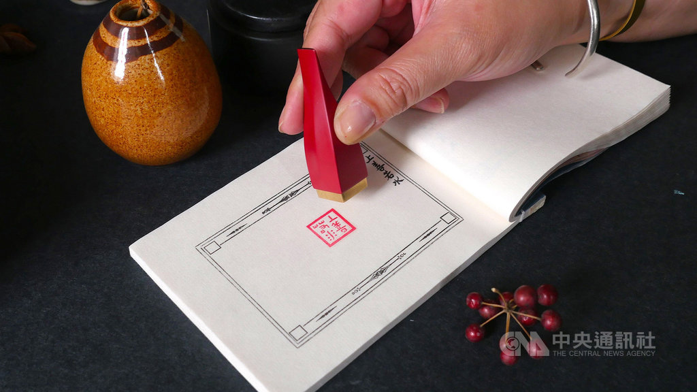
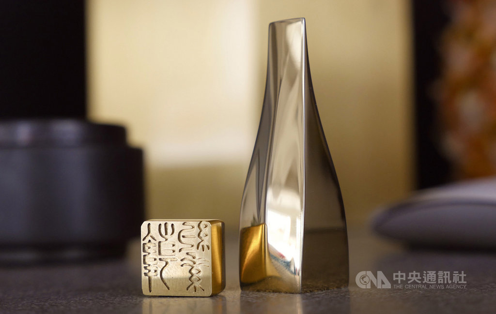

從篆刻學習漢字之美 款為文化留下印記
（中央社記者鄭景雯台北11日電）「身為台灣人，我們有繁體字型的支援，我們對漢字的理解超越中國的簡體字。」「款」品牌經理鐘絢蓁，有感於漢字的流失，和團隊開發篆刻印章保留文字之美，在創作中留下印記。
從古至今，「印」在華人文化中，代表個人身分、地位與家族傳承的重要信物，在華人世界中仍保留用印文化，在方寸之間，「印」展現了文字設計、章法創意之美。
從小在英國、南非唸書的鐘絢蓁，雖然接受西方教育長大，但兒時因在台灣唸小學，奠定她的中文書寫及閱讀基礎，以至於出國唸書後，仍然對中文有深厚情感。
幾年前她到日本生活，發現日本人經常用印，舉凡取件、銀行、申請文件等，跟台灣的文化相似。然而日本有篆刻美術館、漢字博物館，有系統保留漢字文化，反觀使用繁體字的台灣，卻忽略了這塊文化。
鐘絢蓁接受中央社專訪時感嘆，台灣有使用繁體字的優勢，保留漢字之美，「我們對漢字的理解，超越中國的簡體字，簡體字完全破壞結構」，然而卻鮮少看到台灣對漢字文化的推廣和重視。
為了傳承文字藝術，鐘絢蓁和團隊合夥人創立設計品牌「款」，從藝術的角度開發年輕人也能接受的篆體印章，採用黃銅與金屬材質製作印章，她表示，相較傳統印章使用木頭、石或玉材，黃銅的使用壽命更長久。
鐘絢蓁說，「名字」是父母給的禮物，也代表每一個人身上的Logo，「希望藉由篆刻印章再次牽起橋梁，讓大家透過文字和印章尋根，代代相傳給下一代」。
「方寸之間氣象萬千。」鐘絢蓁說，從古至今，篆刻藝術家要在印章這麼小的空間裡寫字、刻字很不容易。過去幾年她也花時間研究篆體，也到各地拜訪篆刻老師傅，有的人到80、90歲還在刻印章，讓她很感動。
不過刻印章很傷眼睛，鐘絢蓁也意識到這項文化若不繼續傳承，未來恐怕會斷了根，因此「款」從一開始就找年輕篆刻藝術家合作，為客戶量身親繪姓名篆字，再以當代精密科技製作，可媲美高端機械錶技術，讓篆刻藝術得以傳承。
日前國產遊戲「還願」引發全球關注，由於遊戲中的符紙印有篆體「習近平小熊維尼」，引發中國網友抵制，這7個篆體字瞬間熱燒。
台灣有網友還特別把這幾個字體製成圖檔，提供給有興趣的網友下載，可刻成印章，有一名篆刻藝術家，還在PTT貼出教學步驟，教大家如何刻出「習近平小熊維尼」篆體印章。
鐘絢蓁表示，雖然政治歸政治、文化歸文化，但就這起事件而言，她看到篆體字受到關注，也看見篆體、印章有機會發聲、被看見，認為是一件好事，「單是一個印章就幫我開啟一扇門，重新認識自己的文化」。（編輯：張雅淨）1080311
